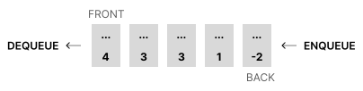

Interface UrgencyQueue<Type>
- Type Parameters:
Type- the type of items held in this urgency queue
- All Superinterfaces:
Queue<Type, UrgencyQueue<Type>>
- All Known Implementing Classes:
OracleCustomLinkedUrgencyQueue, OracleLinkedUrgencyQueue
null references to objects of type
Type). Unlike a standard queue, which
orders its "line" of items according to FIFO
(first-in-first-out) semantics, an urgency queue associates a level of
urgency with each item and orders its items according to their
relative level of urgency.
Some items in an urgency queue have special names:
- most urgent item
-
Refers to the item at the front of the "line" of items maintained by an urgency queue. The most urgent item can be examined using
peek(), and it can be be removed usingdequeue(). - least urgent item
-
Refers to the item at the back of the "line" of items maintained by an urgency queue.

Ordering by Level of Urgency
Implementing classes MUST provide a way to compare items by their level of urgency. This is typically done in one of two ways:Comparable Upper Bound
An implementing class can use<Type extends Comparable<Type>> for
its type parameter declaration to ensure that Type can only be
parameterized (i.e., replaced when used) with a class that implements
Comparable<Type> — this syntax expresses an upper bound
for the type parameter Type. If an implementing class does this, then its
code can directly determine the relative level of urgency between two
items of type Type using the
natural ordering defined by the item type's
compareTo(Type) method —
such classes MUST include at least one zero-parameter (default), public
constructor.
Here is a declaration for a class called ImplClass
that implements UrgencyQueue by imposing a comparable upper
bound:
public class ImplClass<Type extends Comparable<Type>> implements UrgencyQueue<Type> {
public ImplClass() {
} // ImplClass
} // ImplClassType can
be compared using their compareTo(Type)
method. For example, if a and b are of type Type, then
the return value of a.compareTo(b) can determine their relative level
of urgency:
int ret = a.compareTo(b)
|
||||
|---|---|---|---|---|
| Return Value | Order | |||
ret < 0
|
a |
is less urgent than | b |
|
ret == 0
|
a |
has the same level of urgency as | b |
|
ret > 0
|
a |
is more urgent than | b |
|
A sample "oracle" implementation of this interface with a comparable
upper bound is provided by the OracleLinkedUrgencyQueue
class. Some code examples later in this documentation are provided that
use the this "oracle" implementation to illustrate some basic
urgency queue operations.
Comparator Constructor Parameter
An implementing class that does not impose a comparable upper bound MUST allow users to specify urgency ordering via a constructor parameter of typeComparator<Type>
(i.e., a comparator) — such classes MUST include at least
one single-parameter, public constructor that accepts a
the Comparator<Type> object that will be used for ordering.
Although Type does not have an explicit upper bound requirement
in this scenario, the implementing class can still determine the
relative level of urgency between two items using the ordering imposed
by the comparator (i.e., it uses the comparator's
compare(Type, Type) method
to determine the order).
Here are the class and constructor declarations for a class called
ImplClass that implements UrgencyQueue by
requiring a comparator constructor parameter — it's not shown
in the code snippet, but the constructor should save a reference to
the supplied comparator object for later use by the instance
methods of the class:
public class ImplClass<Type> implements UrgencyQueue<Type> {
public ImplClass(Comparator<Type> cmp) {
} // ImplClass
} // ImplClassType can
be compared using the comparator's compare(Type, Type)
method. For example, if a and b are of type Type, then
the return value of cmp.compare(a, b)) can determine their relative level
of urgency:
int ret = cmp.compare(a, b)
|
||||
|---|---|---|---|---|
| Return Value | Order | |||
ret < 0
|
a |
is less urgent than | b |
|
ret == 0
|
a |
has the same level of urgency as | b |
|
ret > 0
|
a |
is more urgent than | b |
|
A sample "oracle" implementation of this interface with a comparator
constructor parameter is provided by the
OracleCustomLinkedUrgencyQueue
class. Some code examples later in this documentation are provided that
use the this "oracle" implementation to illustrate some basic
urgency queue operations.
Examples
The examples provided in this documentation utilize different item types to illustrate urgency-based semantics. With that in mind, you may need toimport things when trying the examples out for
yourself — we will provide links to relevant classes and
interfaces in the exposition provided for each example.
Example 1: Comparable Upper Bound
SinceInteger implements Comparable<Integer>, it can
be used as the item of an implementation that uses a
comparable upper bound to
determine relative order of urgency — here is a quick example
using the provided OracleLinkedUrgencyQueue class:
// new queue
UrgencyQueue<Integer> queue = new OracleLinkedUrgencyQueue<Integer>();
// enqueue some items
queue.enqueue(2);
queue.enqueue(1);
queue.enqueue(3);
queue.enqueue(0);
// define a "printNum" action
Consumer<Integer> printNum = (Integer num) -> {
System.out.printf("dequeued %d\n", num);
};
// dequeue and print all items
queue.dequeueMany(queue.size(), printNum);Integer.compareTo(Integer)
considers the integer values directly, each item's level of urgency is
the same as its integer value. Here is the output:
dequeued 3
dequeued 2
dequeued 1
dequeued 0Example 2: Another Comparable Upper Bound
Since thePerson class provided in the
cs1302.oracle.model package implements
Comparable<Person>, it can also be
used as the item of an implementation that uses a
comparable upper bound to
determine relative order of urgency — here is a quick example
using the provided OracleLinkedUrgencyQueue class:
// new queue
UrgencyQueue<Person> queue = new OracleLinkedUrgencyQueue<Person>();
// define some items -- store items in a java.util.List<Person> object
Iterable<Person> people = List.<Person>of(
new Person(23, "Bob"),
new Person(23, "Sue"),
new Person(24, "Ash"),
new Person(22, "Cal")
);
// enqueue all items
queue.enqueueAll(people);
// define a "printPerson" action using a lambda expression
Consumer<Person> printPerson = (Person person) -> {
System.out.println(person);
};
// dequeue and print all items
queue.dequeueMany(queue.size(), printPerson);Person.compareTo(Person)
considers both the Person.age() and Person.name() of a
Person object (in that order), each item's level of urgency is
based on both its integer age() value and its string name()
value. Here is the output — that is why Person[age=23, name=Sue]
is considered more urgent than Person[age=23, name=Bob]:
Person[age=24, name=Ash]
Person[age=23, name=Sue]
Person[age=23, name=Bob]
Person[age=22, name=Cal]Example 3: Comparator Constructor Parameter
Sometimes users want more control over the ordering of items. For example, while the natural ordering forPerson
object considers both their age() and name(),
some users may only want to order Person objects by their
age() age(). This can be done by defining a comparator that imposes
the desired ordering, then using that comparator with an urgency
queue implementation that requires a
comparator constructor parameter
— here is a quick example using the provided
OracleCustomLinkedUrgencyQueue class:
Here are a few different ways to define a comparator for Person objects
that only considers their age() when performing comparisons
— the ordering imposed by all of these examples is related to the
natural ordering for integers since age() returns
an int:
// use a provided comparator
Comparator<Person> byAge = Person.Order.byAge();// create your own comparator -- manually determine order
Comparator<Person> byAge = (Person a, Person b) -> {
return a.age() - b.age();
};// create your own comparator -- use static utility method to determine order
Comparator<Person> byAge = (Person a, Person b) -> {
return Integer.compare(a.age(), b.age());
};OracleCustomLinkedUrgencyQueue class:
// create queue
UrgencyQueue<Person> queue = new OracleCustomLinkedUrgencyQueue<Person>(byAge);
// define some people
Iterable<Person> people = List.<Person>of(
new Person(23, "Bob"),
new Person(23, "Sue"),
new Person(24, "Ash"),
new Person(22, "Cal")
);
// enqueue some people
queue.enqueueAll(people);
// define a "printPerson" action
Consumer<Person> printPerson = (Person person) -> {
System.out.println(person.age() + ": " + person.name());
};
// dequeue and print all items
queue.dequeueMany(queue.size(), printPerson);age() of a Person object,
each item's level of urgency in this scenario is simply
its integer age() value. Here is the output —
notice that Person[age=23, name=Bob] is considered more urgent
than Person[age=23, name=Sue] because of the imposed ordering
and the order in which both were enqueued:
24: Ash
23: Bob
23: Sue
22: CalExample 4: Reversing the Urgency Order
When you use an urgency queue implementation that requires a comparator constructor parameter, you get to decide what the ordering is. For example, here are a few different ways to define a comparator forPerson objects
that only considers their age(),
in reverse,
when performing comparisons
— the ordering imposed by all of these examples is related to the
natural ordering for integers since age() returns
an int:
// use a provided comparator
Comparator<Person> byAgeReversed = Person.Order.byAge().reversed();// create your own comparator -- manually determine order
Comparator<Person> byAgeReversed = (Person a, Person b) -> {
return -1 * (a.age() - b.age());
};// create your own comparator -- use static utility method to determine order
Comparator<Person> byAgeReversed = (Person a, Person b) -> {
return -1 * Integer.compare(a.age(), b.age());
};OracleCustomLinkedUrgencyQueue class:
// create queue
UrgencyQueue<Person> queue = new OracleCustomLinkedUrgencyQueue<Person>(byAgeReversed);
// define some people
Iterable<Person> people = List.<Person>of(
new Person(23, "Bob"),
new Person(23, "Sue"),
new Person(24, "Ash"),
new Person(22, "Cal")
);
// enqueue some people
queue.enqueueAll(people);
// define a "printPerson" action
Consumer<Person> printPerson = (Person person) -> {
System.out.println(person.age() + ": " + person.name());
};
// dequeue and print all items
queue.dequeueMany(queue.size(), printPerson);age() of each Person
objects in reverse, the youngest
Person object is the most urgent:
22: Cal
23: Bob
23: Sue
24: AshExample 5: Another Comparator Constructor Parameter
Users may want to use an urgency queue to hold objects of a class that does not have a natural ordering (e.g., the providedMovie class). In such scenarios,
an urgency queue with a
comparator constructor parameter
is required.
To illustrate this concept, lets use a subset of the
the IMDb Top Movies list provided in
Movie.Data.IMDB_TOP_MOVIES. Here is some code that
gets the first 10 entries in that list and prints out their
year() and name() values:
// get some movie objects -- first 10 from IMDb top movies list
List<Movie> movies = Movie.Data.IMDB_TOP_MOVIES.subList(0, 10);
// define "printMovie" action
Consumer<Movie> printMovie = (Movie movie) -> {
Year year = movie.year(); // java.time.Year object
String name = movie.name();
System.out.printf("%s: %s\n", year, name);
};
// use the "printMovie" action to print each movie
for (Movie movie : movies) {
printMovie.accept(movie);
} // for1994: The Shawshank Redemption
1972: The Godfather
2008: The Dark Knight
1974: The Godfather Part II
1957: 12 Angry Men
1993: Schindler's List
2003: The Lord of the Rings: The Return of the King
1994: Pulp Fiction
2001: The Lord of the Rings: The Fellowship of the Ring
1966: The Good, the Bad and the UglyMovie objects that
considers their year() when performing
comparisons, then use that comparator with the provided
OracleCustomLinkedUrgencyQueue class:
// define movie comparator that orders by year
Comparator<Movie> byYear = (Movie a, Movie b) -> {
// Movie does not have a compareTo method, but java.time.Year does
return a.year().compareTo(b.year());
};
// create an urgency queue
UrgencyQueue<Movie> queue = new OracleCustomLinkedUrgencyQueue<Movie>(byYear);
// enqueue the items -- level of urgency based on cmp.compare(Movie, Movie)
queue.enqueueAll(movies);
// dequeue all items -- use "printMovie" action from earlier
queue.dequeueMany(queue.size(), printMovie);2008: The Dark Knight
2003: The Lord of the Rings: The Return of the King
2001: The Lord of the Rings: The Fellowship of the Ring
1994: The Shawshank Redemption
1994: Pulp Fiction
1993: Schindler's List
1974: The Godfather Part II
1972: The Godfather
1966: The Good, the Bad and the Ugly
1957: 12 Angry MenUser-specified Behavior
Some queue methods, such asdequeue(Consumer), dequeueMany(int, Consumer), and filter(Predicate) accept
behavioral parameters that enable part of their behavior
to be specified by the user. The parameter type of a behavioral parameter
is always a functional interface so that
user-specified behavior be described by supplying a reference
to an implementing object (i.e., an object that implements the interface).
Since the interfaces for behavioral parameters are functional, users MAY create an implementing object using a lambda expression or method reference in addition to defining and instantiating an implementing class in the usual way.
Non-interference
To ensure that a queue behaves correctly both during and after a call to a method that supports user-specified behavior via a behavioral parameter, user-specified behavior MUST NOT change the state of the calling queue object or any items held by the queue. We may use the term non-interference or non-interfering to describe this requirement in various places throughout this documentation.Running the Method Examples
Each Java snippet in the method details is an independent example. Place one snippet at a time in thepublic static void main(String[] args) method
of a public class Example, add the imports below before the class,
and save it as Example.java. A particular example may need only some
of these imports. Use JDK 25 and include the supplied JAR when compiling and
running. Replace /path/to/cs1302-urgency-queue.jar with its actual path.
javac --release 25 -Xlint:all -Werror -cp /path/to/cs1302-urgency-queue.jar Example.java
java -cp .:/path/to/cs1302-urgency-queue.jar Exampleimport cs1302.gen.UrgencyQueue;
import cs1302.oracle.OracleLinkedUrgencyQueue;
import cs1302.oracle.OracleCustomLinkedUrgencyQueue;
import cs1302.oracle.model.Person;
import java.util.List;
import java.util.ArrayList;
import java.util.Comparator;
import java.util.function.Consumer;
import java.util.function.Predicate;
import java.util.function.IntFunction;-
Method Summary
Modifier and TypeMethodDescriptionvoidclear()Removes all items from this urgency queue.dequeue()Retrieves and removes the most urgent item in this urgency queue.voidRemoves the most urgent item in this urgency queue and performs the given action on the removed item.dequeueMany(int num) Builds and returns a new urgency queue that contains the most urgentnumitems dequeued from thisUrgencyQueue.voiddequeueMany(int num, Consumer<Type> action) Removes the most urgentnum-many items in this urgency queue and performs the given action (usingaction.accept) on each item, in the urgency queue.booleanInserts the specified item into this urgency queue.<SubType extends Type>
booleanenqueueAll(Iterable<SubType> items) Enqueues the items contained in the specifiedIterableinto this urgency queue.Builds and returns a new urgency queue consisting of the items of this urgency queue that pass the test specified by the given predicate.peek()Retrieves, but does not remove, the most urgent item in this urgency queue.intsize()Returns the number of items in this urgency queue.Type[]toArray(IntFunction<Type[]> generator) Returns an array containing all of the objects in thisUrgencyQueuein proper sequence (from first to last element, by urgency).toString()Returns a string representation of this urgency queue.
-
Method Details
-
size
int size()Returns the number of items in this urgency queue.Examples
The following example checks the number of items before and after insertion and removal.See the instructions for running the method examples. Each Java snippet is independent.
Expected output:UrgencyQueue<Person> queue = new OracleLinkedUrgencyQueue<Person>(); System.out.println("empty: " + queue.size()); queue.enqueue(new Person(22, "Sally")); queue.enqueue(new Person(23, "Kuma")); System.out.println("after insertion: " + queue.size()); queue.dequeue(); System.out.println("after removal: " + queue.size());empty: 0 after insertion: 2 after removal: 1Each successful insertion adds one item, and this dequeue call removes one item.
- Specified by:
sizein interfaceQueue<Type, UrgencyQueue<Type>>- Returns:
- the number of items in this urgency queue.
-
enqueue
Inserts the specified item into this urgency queue. The inserted item is placed such that it appears after any existing items with the same or greater level of urgency and before any existing items with a lesser level of urgency.Examples
These examples compare people by age in opposite directions. Each comparator determines which ages have greater urgency; both queues preserve arrival order among people of the same age.See the instructions for running the method examples. Each Java snippet is independent.
Expected output:Comparator<Person> byAgeAscending = (Person a, Person b) -> { return Integer.compare(a.age(), b.age()); }; // lambda UrgencyQueue<Person> queue0 = new OracleCustomLinkedUrgencyQueue<Person>(byAgeAscending); System.out.println(queue0.enqueue(new Person(22, "Sally"))); queue0.enqueue(new Person(20, "Billy")); queue0.enqueue(new Person(23, "Kuma")); queue0.enqueue(new Person(22, "Sue")); System.out.println(queue0);true [Person[age=23, name=Kuma], Person[age=22, name=Sally], Person[age=22, name=Sue], Person[age=20, name=Billy]]
Expected output:Comparator<Person> byAgeDescending = (Person a, Person b) -> { return Integer.compare(b.age(), a.age()); }; // lambda UrgencyQueue<Person> queue1 = new OracleCustomLinkedUrgencyQueue<Person>(byAgeDescending); System.out.println(queue1.enqueue(new Person(22, "Sally"))); queue1.enqueue(new Person(20, "Billy")); queue1.enqueue(new Person(23, "Kuma")); queue1.enqueue(new Person(22, "Sue")); System.out.println(queue1);true [Person[age=20, name=Billy], Person[age=22, name=Sally], Person[age=22, name=Sue], Person[age=23, name=Kuma]]The queue places the most urgent item first. With byAgeAscending, greater ages have greater urgency, so queue0 lists the oldest person first. With byAgeDescending, smaller ages have greater urgency, so queue1 lists the youngest person first. Sally and Sue have equal urgency under either comparator, so Sally remains before Sue because she was enqueued first.
- Specified by:
enqueuein interfaceQueue<Type, UrgencyQueue<Type>>- Parameters:
item- the item to insert- Returns:
- true if this urgency queue was modified as a result of this call
- Throws:
NullPointerException- ifitemisnull
-
peek
Type peek()Retrieves, but does not remove, the most urgent item in this urgency queue.Examples
The following example retrieves the most urgent person without removing an item.See the instructions for running the method examples. Each Java snippet is independent.
Expected output:UrgencyQueue<Person> queue = new OracleLinkedUrgencyQueue<Person>(); queue.enqueue(new Person(22, "Sally")); queue.enqueue(new Person(20, "Billy")); queue.enqueue(new Person(23, "Kuma")); Person first = queue.peek(); System.out.println("peeked: " + first); System.out.println("size: " + queue.size()); System.out.println(queue);peeked: Person[age=23, name=Kuma] size: 3 [Person[age=23, name=Kuma], Person[age=22, name=Sally], Person[age=20, name=Billy]]
Expected output:UrgencyQueue<Person> queue = new OracleLinkedUrgencyQueue<Person>(); try { queue.peek(); } catch (IllegalStateException exception) { System.out.println("Cannot peek at an empty queue."); } // try System.out.println("size: " + queue.size());Cannot peek at an empty queue. size: 0The variable first refers to the person still held at the front of the queue. The separate empty-queue example catches the documented exception.
- Specified by:
peekin interfaceQueue<Type, UrgencyQueue<Type>>- Returns:
- the most urgent item in the queue.
- Throws:
IllegalStateException- if there are no items in the queue.
-
toString
String toString()Returns a string representation of this urgency queue. The string representation consists of each item in the queue, from most urgent to least urgent, in the descending urgency order, separated by the characters", "(comma and space) with opening and closing square ([,]) at the beginning and end, respectively. Each item of the queue is represented by the string value returned by itstoString()method.Examples
This example prints the queue in descending urgency order.See the instructions for running the method examples. Each Java snippet is independent.
Expected output:UrgencyQueue<Person> queue = new OracleLinkedUrgencyQueue<Person>(); queue.enqueue(new Person(22, "Sally")); queue.enqueue(new Person(20, "Billy")); queue.enqueue(new Person(23, "Kuma")); System.out.println(queue);[Person[age=23, name=Kuma], Person[age=22, name=Sally], Person[age=20, name=Billy]]The representation includes the items in queue order, enclosed in brackets and separated by a comma and space.
-
dequeue
Type dequeue()Retrieves and removes the most urgent item in this urgency queue.Examples
The following example removes the most urgent person and prints the remaining queue.See the instructions for running the method examples. Each Java snippet is independent.
Expected output:UrgencyQueue<Person> queue = new OracleLinkedUrgencyQueue<Person>(); queue.enqueue(new Person(22, "Sally")); queue.enqueue(new Person(20, "Billy")); queue.enqueue(new Person(23, "Kuma")); Person removed = queue.dequeue(); System.out.println("removed: " + removed); System.out.println("remaining: " + queue); System.out.println("size: " + queue.size());removed: Person[age=23, name=Kuma] remaining: [Person[age=22, name=Sally], Person[age=20, name=Billy]] size: 2
Expected output:UrgencyQueue<Person> queue = new OracleLinkedUrgencyQueue<Person>(); try { queue.dequeue(); } catch (IllegalStateException exception) { System.out.println("Cannot dequeue from an empty queue."); } // try System.out.println("size: " + queue.size());Cannot dequeue from an empty queue. size: 0The removed variable refers to the person removed from the queue. An empty queue has no item to remove.
- Specified by:
dequeuein interfaceQueue<Type, UrgencyQueue<Type>>- Returns:
- the most urgent item in the queue.
- Throws:
IllegalStateException- if there are no items in the queue.
-
dequeue
Removes the most urgent item in this urgency queue and performs the given action on the removed item.Examples
This example supplies an action that prints the name of the removed person.See the instructions for running the method examples. Each Java snippet is independent.
Expected output:UrgencyQueue<Person> queue = new OracleLinkedUrgencyQueue<Person>(); queue.enqueue(new Person(22, "Sally")); queue.enqueue(new Person(20, "Billy")); queue.enqueue(new Person(23, "Kuma")); Consumer<Person> printName = (Person person) -> { System.out.println("removed: " + person.name()); }; // lambda queue.dequeue(printName); System.out.println("remaining: " + queue);removed: Kuma remaining: [Person[age=22, name=Sally], Person[age=20, name=Billy]]The action prints the name; it does not modify the calling queue or its items. The dequeue method performs the removal.
- Specified by:
dequeuein interfaceQueue<Type, UrgencyQueue<Type>>- Parameters:
action- the action to be performed on the removed item.- Throws:
NullPointerException- if the specified action isnull.IllegalStateException- if there are no items in the queue.- See Also:
- API Notes:
- This method supports user-specified behavior via one or more of its parameters. Users MUST ensure that the behavior that they specify is non-interfering.
-
dequeueMany
Builds and returns a new urgency queue that contains the most urgentnumitems dequeued from thisUrgencyQueue.Examples
The following example removes the two most urgent items into a new queue.See the instructions for running the method examples. Each Java snippet is independent.
Expected output:UrgencyQueue<Person> queue = new OracleLinkedUrgencyQueue<Person>(); queue.enqueue(new Person(22, "Sally")); queue.enqueue(new Person(20, "Billy")); queue.enqueue(new Person(23, "Kuma")); UrgencyQueue<Person> removed = queue.dequeueMany(2); System.out.println("removed: " + removed); System.out.println("remaining: " + queue); System.out.println("distinct queues: " + (removed != queue)); System.out.println("same runtime class: " + (removed.getClass() == queue.getClass())); UrgencyQueue<Person> empty = queue.dequeueMany(0); System.out.println("zero result: " + empty); System.out.println("distinct zero result: " + (empty != queue)); System.out.println("remaining after zero: " + queue);removed: [Person[age=23, name=Kuma], Person[age=22, name=Sally]] remaining: [Person[age=20, name=Billy]] distinct queues: true same runtime class: true zero result: [] distinct zero result: true remaining after zero: [Person[age=20, name=Billy]]The result is a distinct queue of the same runtime class as the calling queue. Passing zero produces a new empty queue without removing any items.
- Specified by:
dequeueManyin interfaceQueue<Type, UrgencyQueue<Type>>- Parameters:
num- the number of items to remove and return.- Returns:
- a new urgency queue object containing the most urgent
numitems dequeued from this queue - Throws:
IllegalArgumentException- ifnum < 0.IllegalStateException- ifnum > size().- Implementation Requirements:
- The new object MUST be the same type as the calling object.
-
dequeueMany
Removes the most urgentnum-many items in this urgency queue and performs the given action (usingaction.accept) on each item, in the urgency queue.Examples
This example removes two people of equal urgency. The action observes them in their original arrival order.See the instructions for running the method examples. Each Java snippet is independent.
Expected output:Comparator<Person> byAge = (Person a, Person b) -> { return Integer.compare(a.age(), b.age()); }; // lambda UrgencyQueue<Person> queue = new OracleCustomLinkedUrgencyQueue<Person>(byAge); queue.enqueue(new Person(23, "Kuma")); queue.enqueue(new Person(23, "Ash")); queue.enqueue(new Person(20, "Billy")); Consumer<Person> printName = (Person person) -> { System.out.println(person.name()); }; // lambda queue.dequeueMany(2, printName); System.out.println("remaining: " + queue);Kuma Ash remaining: [Person[age=20, name=Billy]]The action is non-interfering: it only prints a name. Because the comparator compares ages only, Kuma and Ash have equal urgency despite their different names.
- Specified by:
dequeueManyin interfaceQueue<Type, UrgencyQueue<Type>>- Parameters:
num- the number of items to remove.action- the action to be performed on the removed items.- Throws:
NullPointerException- if the specified action isnull.IllegalArgumentException- ifnum < 0.IllegalStateException- ifnum > size().- See Also:
- API Notes:
- This method supports user-specified behavior via one or more of its parameters. Users MUST ensure that the behavior that they specify is non-interfering.
-
clear
void clear()Removes all items from this urgency queue.Examples
This example removes all items, then clears the already empty queue.See the instructions for running the method examples. Each Java snippet is independent.
Expected output:UrgencyQueue<Person> queue = new OracleLinkedUrgencyQueue<Person>(); queue.enqueue(new Person(22, "Sally")); queue.enqueue(new Person(20, "Billy")); queue.enqueue(new Person(23, "Kuma")); System.out.println("before: " + queue); queue.clear(); System.out.println("after: " + queue); System.out.println("size: " + queue.size()); queue.clear(); System.out.println("after clearing again: " + queue);before: [Person[age=23, name=Kuma], Person[age=22, name=Sally], Person[age=20, name=Billy]] after: [] size: 0 after clearing again: []Both calls complete normally. Clearing the queue does not require it to contain any items.
- Specified by:
clearin interfaceQueue<Type, UrgencyQueue<Type>>
-
filter
Builds and returns a new urgency queue consisting of the items of this urgency queue that pass the test specified by the given predicate. The term predicate usually refers to some function that returns eithertrueorfalse. Here, it refers to the parametercond, which should refer to an object of a class that implements thePredicate<Type>interface. More formally, this method returns a new urgency queue containing all itemsein this queue such thatcond.test(e)returnstrue.Examples
This example selects people aged at least 22 without removing items from the original queue.See the instructions for running the method examples. Each Java snippet is independent.
Expected output:UrgencyQueue<Person> queue = new OracleLinkedUrgencyQueue<Person>(); queue.enqueue(new Person(22, "Sally")); queue.enqueue(new Person(20, "Billy")); queue.enqueue(new Person(23, "Kuma")); Predicate<Person> atLeast22 = (Person person) -> { return person.age() >= 22; }; // lambda UrgencyQueue<Person> selected = queue.filter(atLeast22); System.out.println("selected: " + selected); System.out.println("original: " + queue); System.out.println("distinct queues: " + (selected != queue)); System.out.println("same first person: " + (selected.peek() == queue.peek())); System.out.println("same runtime class: " + (selected.getClass() == queue.getClass()));selected: [Person[age=23, name=Kuma], Person[age=22, name=Sally]] original: [Person[age=23, name=Kuma], Person[age=22, name=Sally], Person[age=20, name=Billy]] distinct queues: true same first person: true same runtime class: trueThe predicate only examines an age. The result queue is new, but its items are copies of reference values referring to the original person objects; filtering does not clone those objects.
- Specified by:
filterin interfaceQueue<Type, UrgencyQueue<Type>>- Parameters:
cond- the predicate used to test items of this queue.- Returns:
- a reference to the filtered queue.
- Throws:
NullPointerException- if the specified predicate isnull.- See Also:
- Implementation Requirements:
- The new object MUST be the same type as the calling object. This method MUST NOT modify the calling object.
-
enqueueAll
Enqueues the items contained in the specifiedIterableinto this urgency queue. This method should returnfalseif the specifiedIterableis empty. Otherwise, this method either returnstrueor throws an exception upon failure.Examples
The first example inserts people from an iterable, then supplies an empty iterable.See the instructions for running the method examples. Each Java snippet is independent.
Expected output:UrgencyQueue<Person> queue = new OracleLinkedUrgencyQueue<Person>(); Iterable<Person> people = List.<Person>of( new Person(22, "Sally"), new Person(20, "Billy"), new Person(23, "Kuma") ); System.out.println("added: " + queue.enqueueAll(people)); System.out.println(queue); System.out.println("added empty: " + queue.enqueueAll(List.<Person>of())); System.out.println("size: " + queue.size());added: true [Person[age=23, name=Kuma], Person[age=22, name=Sally], Person[age=20, name=Billy]] added empty: false size: 3
Expected output:Comparator<Object> equalUrgency = (Object a, Object b) -> { return 0; }; // lambda UrgencyQueue<Object> queue = new OracleCustomLinkedUrgencyQueue<Object>(equalUrgency); Iterable<Person> people = List.<Person>of( new Person(22, "Sally"), new Person(23, "Kuma") ); System.out.println("added: " + queue.<Person>enqueueAll(people)); System.out.println(queue);added: true [Person[age=22, name=Sally], Person[age=23, name=Kuma]]
Expected output:UrgencyQueue<Person> queue = new OracleLinkedUrgencyQueue<Person>(); queue.enqueue(new Person(22, "Sally")); List<Person> people = new ArrayList<Person>(); people.add(new Person(23, "Kuma")); people.add(null); try { queue.enqueueAll(people); } catch (IllegalArgumentException exception) { System.out.println("Rejected an iterable containing null."); } // try System.out.println("unchanged: " + queue); System.out.println("size: " + queue.size());Rejected an iterable containing null. unchanged: [Person[age=22, name=Sally]] size: 1In the second example, Type is Object and SubType is Person. The explicit method type argument makes this distinction visible; it can also be inferred. The valid comparator deliberately treats every pair of objects as equally urgent, so insertion order is preserved. This call does not assign an UrgencyQueue<Person> to an UrgencyQueue<Object>. In the third example, ArrayList permits the null entry so that enqueueAll itself performs the rejection. No item from that iterable is added.
- Specified by:
enqueueAllin interfaceQueue<Type, UrgencyQueue<Type>>- Type Parameters:
SubType- the type of the items to be added.- Parameters:
items- the items to add to this queue.- Returns:
trueif this queue is changed as a result of the call;falseotherwise.- Throws:
NullPointerException- ifitemsisnull.IllegalArgumentException- if any of the items in the specifiedIterablearenull.- API Notes:
- This is a generic method; it declares its own type
parameter named
SubTypein addition to interface's type parameter namedType. SinceSubTypeis declared with an upper bound ofType, all the items initemsare guaranteed to be type-compatible withType, even whenTypeandSubTypeare not the same (which they can be). - Implementation Requirements:
- The calling object must not be modified
if any item in
itemsisnull.
-
toArray
Returns an array containing all of the objects in thisUrgencyQueuein proper sequence (from first to last element, by urgency). Thegeneratorparameter accepts a reference to any method that takes an integer, which is the size of the desired array, and produces an array of the desired size.Examples
This example creates a Person array containing the queue items in urgency order.See the instructions for running the method examples. Each Java snippet is independent.
Expected output:UrgencyQueue<Person> queue = new OracleLinkedUrgencyQueue<Person>(); queue.enqueue(new Person(22, "Sally")); queue.enqueue(new Person(23, "Kuma")); System.out.println("urgency queue: " + queue); IntFunction<Person[]> newPersonArray = (int value) -> { return new Person[value]; }; // lambda Person[] persons = queue.toArray(newPersonArray); System.out.println("array length: " + persons.length); System.out.println("first array element: " + persons[0]); System.out.println("queue unchanged: " + queue);urgency queue: [Person[age=23, name=Kuma], Person[age=22, name=Sally]] array length: 2 first array element: Person[age=23, name=Kuma] queue unchanged: [Person[age=23, name=Kuma], Person[age=22, name=Sally]]The generator creates an array of the requested length. The queue remains unchanged, and the array components contain reference values referring to the same person objects.
- Specified by:
toArrayin interfaceQueue<Type, UrgencyQueue<Type>>- Parameters:
generator- a function which produces a new array of the desired type and the provided size.- Returns:
- an array containing all of the items in this queue in proper sequence.
- Throws:
NullPointerException- ifgeneratoris null.- Implementation Requirements:
- This method MUST NOT modify the calling object; however,
it SHOULD supply the
size()of the calling queue object when callinggenerator.apply(int)to create the new array.
-